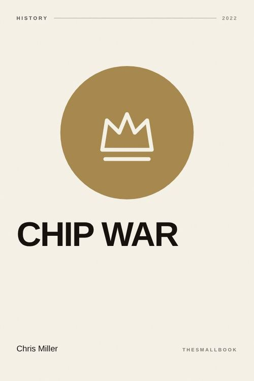

Library › Authors › Chris Miller
Books by Chris Miller
Chris Miller has one book in the library. Every book here is read down to the big idea, the lessons, the lines worth keeping and the actions worth taking. Start with the summary, then buy the full book if it earns a place on your shelf.

Chip War
2022 · 11 min · 10 lessons
Semiconductors power everything from phones to missiles, and their supply chain runs through a handful of companies and countries. Whoever controls chips shapes the century.
Chris Miller, an economic historian, tells the story of how semiconductors went from a laboratory curiosity to the foundation of the modern economy and military. The book traces the invention of the transistor and integrated circuit in the United States, the rise of Japanese memory chips, Korea's Samsung, Taiwan's TSMC and the Dutch company ASML, whose machines are the only ones able to print the most advanced chips. Miller shows how a few chokepoints, design software, manufacturing equipment and leading-edge...
Lessons in the summary
- The Transistor and the Integrated Circuit
- Moore's Law: Doubling Every Two Years
- Asia Builds the Factories
- Japan's Rise and the Memory Wars
- Samsung and Korea's Big Bet
- TSMC and the Foundry Model
- ASML and the Machine That Prints the Future
- China's Chip Ambitions
- Taiwan: The Most Dangerous Chokepoint
- The New Chip Race, Including India
Lines worth keeping
- World War II was decided by steel and aluminum. The Cold War that followed was defined by atomic weapons. Today's rivalry is about computing power.
- The semiconductor supply chain is a story of extreme specialization.
- Chips are the new oil.
Questions Chris Miller helps answer
Read nearby authors next
- Bill Bryson 2 books
- David Grann 2 books
- Isabel Wilkerson 2 books
- Ramachandra Guha 2 books
- Siddhartha Mukherjee 2 books
- Walter Isaacson 2 books
- William Dalrymple 2 books
- A.L. Basham 1 book
Questions Chris Miller helps answer
Where should I start with Chris Miller? Start with Chip War: Semiconductors power everything from phones to missiles, and their supply chain runs through a handful of companies and countries. Whoever controls chips shapes the century.